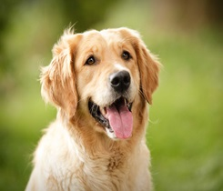

The Labrador Retriever is one of the most popular dog breeds worldwide, known for their friendly and outgoing nature.
Height: For Males: 56–57 cm (22–23 in) ,
For Females : 54–56 cm (21–22 in).
Weight: For Males: 29–36 kg (65–80 lb)
For Females : 25–32 kg (55–70 lb).
Colors : Black, chocolate, or yellow (ranges from pale yellow to fox red).
Lifespan : 10-12 years
Price : 8,000 to 10,000
Pomeranian
The Pomeranian, more affectionately known as the Pom, might be small, but he has a huge personality.
Height : For Males: 15-28 cm (6-11 in) ,
For Females : 13-25 cm (5-10 in).
Weight: For Males: 1.8-3.2 kg (4-7 lb) ,
For Females : 1.4-2.7 kg (3-6 lb).
Colors : Orange, cream, black and white. Lifespan : 12-14 years
Price : 4,000 to 5,000

Golden Retriver
Golden Retrievers are kind, trusting, and gentle. Also they are highly intelligent, eager to please, playful, active. Most importantly these are very easy to train.
Height : For Males 56–61 cm (22–24 in) , For
Females 51–56 cm (20–22 in).
Weight: For Males: 29-34 kg (65-75 lb) ,
For Females : 25-29 kg (55-65 lb).
Colors : Golden (or dark golden),Cream. Lifespan : 10-12 years
Price : 10,000 to 14,000
Shih Tzu
The Shih Tzu is a sturdy little dog with a small snout and normally has large dark brown eyes. They’re known for being intelligent, lively, friendly, trusting, and affectionate.
Height : For Males 20–28 cm (8–11 in), For
Females 19–27 cm (7–10.5 in).
Weight: For Males: 4-7 kg (9-16 lb) ,
For Females : 3-6 kg (7-14 lb).
Colors : White,black,brown,gray,silver. Lifespan : 10-16 years
Price : 12,000 to 15,000
Beagle
Beagles are kind, trusting, and gentle. Also they are highly intelligent, eager to please, playful, active. Most importantly these are very easy to train.
Height : For Males 25-38 cm (10-15 in) , For
Females 23-36 cm (9-14 in).
Weight: For Males: 9-4 kg (20-30 lb) ,
For Females : 8-11 kg (18-25 lb).
Colors : Tri color(black,white and tan) , leamon and white & chocolate brown. Lifespan : 12-15 years
Price : 10,000 to 15,000
Rottweiler
Rottweilers are powerful, protective, and loyal, famous for their instinct for guarding. But they are also easily trained, making them loyal, loving, and confident guardians.
Height : For Males:61-69 cm (24–27 in) , For
Females: 56-63 cm (22-25 in).
Weight: For Males: 43-61 kg (95-135 lb) ,
For Females : 36-52 kg (80-115 lb).
Colors : Black,Mahogany and Tan. Lifespan : 8-12 years
Price : 10,000 to 14,000
German Shepherd
The German Shepherd are intelligent, loyal and energetic.It has since been used in many other types of work, including disability, search-and-rescue, police work,etc.
Height : For Males 61-66 cm (24-26 in) , For
Females 56-61 cm (22-24 in).
Weight: For Males: 39-50 kg (85-110 lb) ,
For Females : 34-43 kg (75-95 lb).
Colors : Black, black with (cream, red, silver & tan) and white. Lifespan : 9-13 years
Price : 10,000 to 16,000
Dachshund
A typical dachshund is long-bodied and muscular with short stubby legs.The dachshund was bred to scent, chase, and flush out badgers and other burrow-dwelling animals.
Height : For Males: 15-25 cm (6-10 in) , For
Females: 15-23 cm (6-9 in).
Weight: For Males: 7-15 kg (16-32 lb) ,
For Females : 7-13 kg (15-29 lb).
Colors : Red,black,chocolate brown,cream and light golden. Lifespan : 12-16 years
Price : 3,000 to 5,000
Rajapalayam
Rajapalayam can be the most affectionate, loyal, and devoted pets you can find. On the other hand, when it comes to strangers it behave aggressively.
Height : For Males:63-76 cm (25-30 in) , For
Females 58-71 cm (23-28 in).
Weight: For Males: 25-29 kg (55-65 lb) ,
For Females : 20-25 kg (45-55 lb).
Colors : White color coating with cream or pale yellow tint Lifespan : 10-13 years